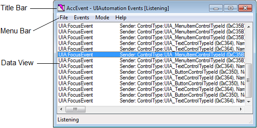

AccEvent (Accessible Event Watcher) lets developers and testers to validate that an application's UI elements raise proper Microsoft UI Automation and Microsoft Active Accessibility events when UI changes occur. Changes in the UI can occur when focus changes, or when a UI element is invoked, selected, or has a state or property change.
AccEvent is installed with the Windows Software Development Kit (SDK). It is located in the \bin\ folder of the SDK installation path (Accevent.exe).
[!NOTE] AccEvent is a legacy tool. We recommend using Accessibility Insights instead.
AccEvent can be used to examine accessibility data on systems that don't have UI Automation, it was originally written for Microsoft Active Accessibility. To examine UI Automation, UI Automation must be present on the system. For more information, see the "Requirements" section of UI Automation.
AccEvent is installed as part of the overall set of tools in the Windows SDK, it is not distributed as a separate exe download. The Windows SDK includes all of the accessibility-related tools documented in this section. Get the Windows SDK. (There's also an SDK download archive linked from that page, if you need a previous version.)
To run AccEvent, find AccEvent.exe in the \bin\ folder and run it (you don't typically have to run as administrator).
When you launch AccEvent, the main window is displayed. The main AccEvent window displays the UI Automation or Microsoft Active Accessibility events raised by applications that are running. The main window has the following major parts:
AccEvent has a graphical user interface only; there are no command line arguments for this tool, but you could use other tools to process the output log as text.
The following image shows the main AccEvent window.

This section includes information about commonly used AccEvent tasks.
You use the Mode menu to configure the AccEvent operating mode and select settings that control the behavior of the tool. You can select the following options.
| When this option is selected | AccEvent does this |
|---|---|
| Always on Top | Appears on top of any other user interface on the screen. |
| UIA Events | Displays information about UI Automation events. |
| WinEvents (In Context) | Displays information about Microsoft Active Accessibility events (WinEvents) passed to hook functions that reside in the server address space. For more information, see In-Context Hook Functions. |
| WinEvents (Out of Context) | Displays information about Microsoft Active Accessibility events (WinEvents) passed to hook functions that reside in the client address space. For more information, see Out-of-Context Hook Functions. |
| Show Highlight Rectangle | Highlights a rectangle around the UI element that raised the selected event. |
| Show Information Tooltip | Shows event information in a tooltip. |
| Settings | Displays the UIA Event Settings or WinEvent Settings dialog box. |
Â
To configure the UI Automation events and properties that are displayed in the AccEvent window, click the Mode menu, select UIA Events, and then select Settings. The UIA Event Settings dialog box is displayed. You can also use this dialog box to filter for events.
The UIA Event Settings dialog box contains the following panes:
Global Events
Select the FocusChangedEvent check box to display information about global focus-changed events.
Event Type
Select the events that you are interested in.
Scope
Select the UI element that you want AccEvent to listen to for events.
Include events from
Select Immediate children if you what to see events from the immediate child elements of the UI element selected in the Scope pane. If you want to see events from all descendant elements, select All Descendants.
Report Properties
Select the properties that you want displayed after each event in the main window. If Show Information Tooltip is selected in the Mode menu, the selected properties are also displayed in a tooltip.
To configure the Microsoft Active Accessibility events and properties that are displayed in the AccEvent window, click the Mode menu, select either WinEvents (In Context) or WinEvents (Out of Context), and then select Settings. The WinEvent Settings dialog box is displayed. You can also use this dialog box to filter for events.
The WinEvent Settings dialog box contains the following panes:
Objects
Select the objects that you want AccEvent to listen to for events. AccEvent can listen for events originating from windows, from the cursor, or from the caret. Window is selected by default.
Events
Select the events that you are interested in. All events are displayed by default.
Event Information
Select the information you want displayed after each event's name in the main window.
Object Properties
Select the properties that you want displayed after each event in the main window. If Show Information Tooltip is selected in the Mode menu, the selected properties are also displayed in a tooltip. Name, Role, and State are selected by default.
Filtering
Select one of the radio buttons in the filtering section to filter the events raised by the windows specified in the hWNDs field. The Don't filter radio button is selected by default.
Options
Select any of the following options:
| When this option is selected | AccEvent does this |
|---|---|
| Use Invoke | Uses IDispatch::Invoke to retrieve object properties instead of using IAccessible methods. |
| Always Get Object (even if no object properties selected) | Retrieves the object associated with the event even if no items are selected in the Object Properties pane. |
| Display default property (in addition to selected properties) | Displays the default property, if any, for the object associated with the event, along with the items selected in the Object Properties pane. |
| Display event information from invisible/hidden windows | Displays the selected items from the Event Information pane for all objects, including those in invisible or hidden windows. |
| Display full event information from invisible/hidden windows | Displays the selected items from the Event Information pane, and the selected (or default) items from the Object Properties pane, for all objects, including those in invisible or hidden windows. |
| DebugBreak on next event | Causes a breakpoint exception to occur in the process that originates the next WinEvent. This signals the debugger to handle the exception. |
Use the Event menu to perform the following tasks:
| When this option is selected | AccEvent does this |
|---|---|
| Start Listening | Starts displaying event information in the Data view. |
| Stop Listening | Stops displaying event information in the Data view. |
| Clear Event History | Clears the contents of the Data view. |
| Select All Events | Selects all events listed in the Data view. |
| Copy Selected Events | Copies the selected events to the clipboard. |
To begin saving events to a text file, open the File menu and select Start Logging to File. AccEvent begins writing events to the specified file until you select Stop Logging from the File menu. The text file can be useful for troubleshooting and reviewing the events at a later time.